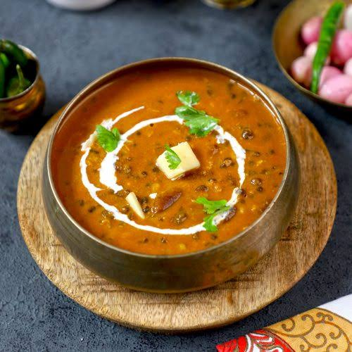

Description
Dal makhani is a rich, creamy, and buttery North Indian lentil dish made with whole black lentils and kidney beans.
Ingredients
- Black Lentis
- Kidney Beans
- Onion and Tomatoes
- Ginger-Garlic Paste
- Whole Spices
- Butter and Ghee
- Heavy Cream
- Chilli and Garam Masala
- Kasuri Methi
Steps
- Soak the black lentils and kidney beans overnight for 8 to 9 hours.
- Drain the soaking water and rinse the lentils thoroughly in fresh water.
- Boil the lentils in a pressure cooker with fresh water and salt until completely mashable
- Mash a few cooked lentils with a spoon to make the final texture naturally creamy.
- Melt butter and ghee in a deep pan and fry the whole spices for a minute.
- Sauté the finely chopped onions in the hot fat until they turn golden brown.
- Cook the ginger-garlic paste with the onions until the raw smell goes away.
- Simmer the tomato puree with red chili powder and turmeric until oil separates.
- Mix the boiled lentils and their cooking liquid into the fried tomato masala base.
- Simmer the mixture on low heat for 30 minutes while stirring frequently.
- Season the dal with garam masala and crushed kasuri methi near the end.
- Finish by stirring in heavy cream and topping with an extra dollop of butter.